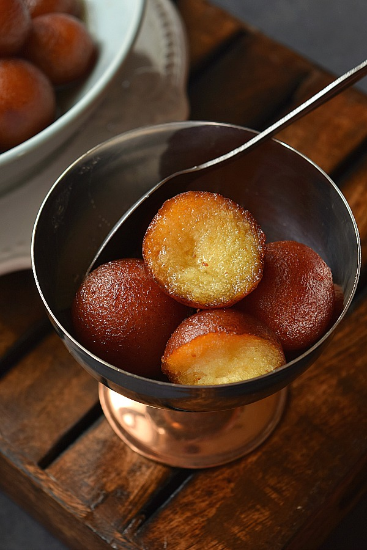
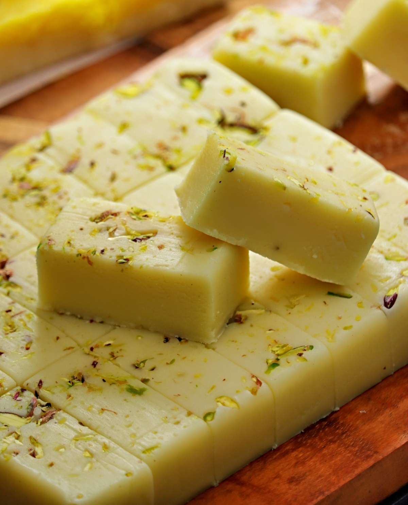
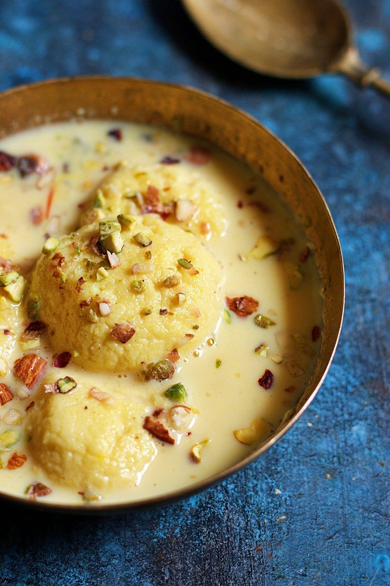
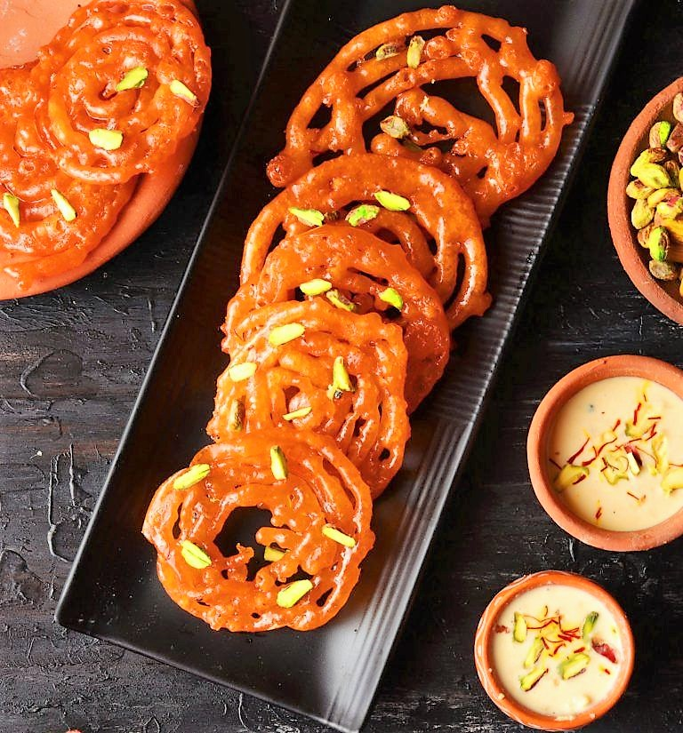

Gulab Jamun
Ingredients
- 1 cup all-purpose flour
- 1/4 teaspoon baking powder
- 1 tablespoon ghee
- 1/4 cup milk (adjust as needed)
- 2 cups sugar
Recipe
- Prepare Sugar Syrup: Boil 2 cups of sugar with 1.5 cups of water until dissolved. Add 4-5 crushed cardamom pods (optional), saffron (optional), and 1 teaspoon rose water (optional). Simmer for 5-6 minutes and set aside.
- Make Dough: Mix 1 cup all-purpose flour and 1/4 teaspoon baking powder. Add 1 tablespoon ghee and gradually mix in 1/4 cup milk to form a soft dough. Rest the dough for 10-15 minutes.
- Shape Balls: Form small, smooth balls without cracks from the dough.
- Fry Balls: Fry the balls in hot ghee or oil over low-medium heat until golden brown. Drain on paper towels.
- Soak in Syrup: Warm the syrup slightly if needed. Soak the fried balls in the syrup for at least 2 hours. Serve warm or at room temperature.

Vanilla Ice Cream Burfi
Ingredients
- 2 cups condensed milk
- 1 cup milk powder
- 1/4 cup ghee
- 1 teaspoon vanilla extract
- 1/4 cup chopped nuts (optional, for garnish)
Recipe
- Prepare Mixture: In a non-stick pan, heat 1/4 cup ghee. Add 2 cups condensed milk and 1 cup milk powder. Mix well and cook on medium heat, stirring continuously to avoid lumps.
- Add Vanilla: Once the mixture thickens and starts to leave the sides of the pan, add 1 teaspoon vanilla extract. Mix well and cook for another 2-3 minutes until the mixture forms a dough-like consistency.
- Set the Burfi: Grease a tray or plate with ghee. Pour the mixture into the tray and spread it evenly with a spatula. Smooth the top.
- Garnish and Cool: Sprinkle chopped nuts over the top if using, and gently press them into the mixture. Let it cool at room temperature or refrigerate until it sets completely.
- Cut and Serve: Once set, cut the burfi into squares or diamond shapes. Serve and enjoy your Vanilla Ice Cream Burfi!

Rasmalai
Ingredients
- 1 liter whole milk
- 1 cup sugar
- 1/2 cup water
- 1 tablespoon lemon juice
- 1/4 teaspoon cardamom powder
Recipe
- Prepare the Chenna (Paneer): In a large pot, gently bring the milk to a boil over medium heat, ensuring occasional stirring to prevent burning. Gradually add lemon juice while stirring until the milk curdles completely. Remove from heat once curdled.
- Strain the Curdled Milk: Line a colander with cheesecloth, positioning it over a bowl. Pour the curdled milk through the cheesecloth to separate the whey from the chenna (paneer). Allow it to sit for a few minutes to enable excess liquid drainage.
- Prepare the Rasmalai Balls: Gather the edges of the cheesecloth and squeeze out any remaining liquid from the chenna. Transfer the chenna to a clean surface and knead it gently for about 5 minutes until it becomes smooth. Divide the chenna into small portions and roll them into smooth balls. Press them gently to flatten slightly.
- Cook the Rasmalai Balls: In a wide pan, mix sugar and water and bring it to a boil over medium heat to make a syrup. Gently drop the prepared chenna balls into the boiling syrup. Cover and let them simmer for about 15-20 minutes, allowing them to double in size and become spongy.
- Prepare the Rasmalai: Once the chenna balls are cooked and have doubled in size, remove them from the syrup using a slotted spoon and place them in a serving dish. Sprinkle cardamom powder over the cooked chenna balls and pour some of the syrup over them. Chill the Rasmalai in the refrigerator for at least an hour before serving. Serve chilled and enjoy the creamy, sweet delicacy!

Jalebi
Ingredients
- 1 cup all-purpose flour (maida)
- 1 tablespoon yogurt
- 1 cup sugar
- 1/2 cup water
- Oil for frying
Recipe
- Prepare the Batter: In a mixing bowl, combine all-purpose flour and yogurt. Gradually add water and mix well to form a smooth batter. The consistency should be similar to pancake batter. Let the batter rest for about 10-15 minutes.
- Make the Sugar Syrup: In a saucepan, combine sugar and water. Bring the mixture to a boil over medium heat, stirring occasionally until the sugar dissolves completely. Once the sugar syrup reaches a one-string consistency, remove it from heat and keep it warm.
- Fry the Jalebis: Heat oil in a deep frying pan or kadhai over medium heat. Fill a piping bag fitted with a jalebi nozzle (or a ziplock bag with a small corner cut off) with the prepared batter. Squeeze the batter into the hot oil in a circular motion to form spirals or pretzel-like shapes. Fry the jalebis until they are golden brown and crisp on both sides. Remove them from the oil and drain excess oil by placing them on paper towels.
- Soak in Sugar Syrup: Immediately transfer the fried jalebis to the warm sugar syrup. Let them soak for about 1-2 minutes, ensuring they are fully coated with the syrup. Flip them once or twice to ensure even soaking.
- Serve: Remove the soaked jalebis from the sugar syrup using a slotted spoon and transfer them to a serving plate. Jalebis are best served warm, so enjoy them fresh with a cup of hot tea or serve them as a dessert. Optionally, garnish with chopped pistachios or almonds for added flavor and presentation.
